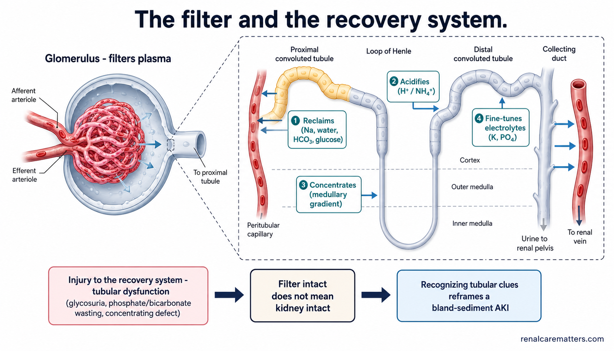
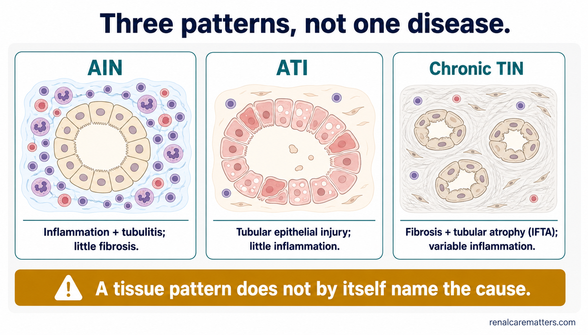
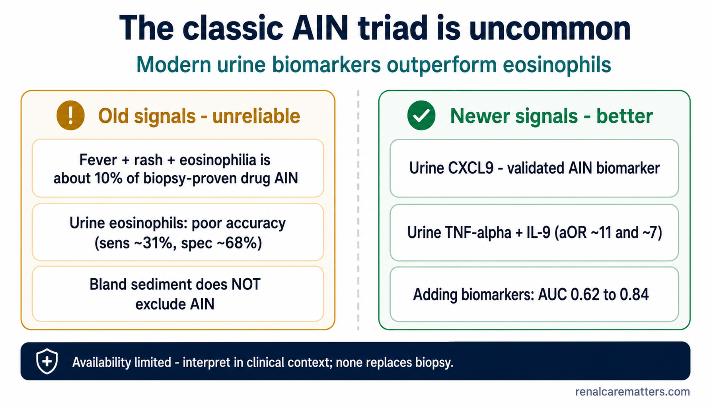
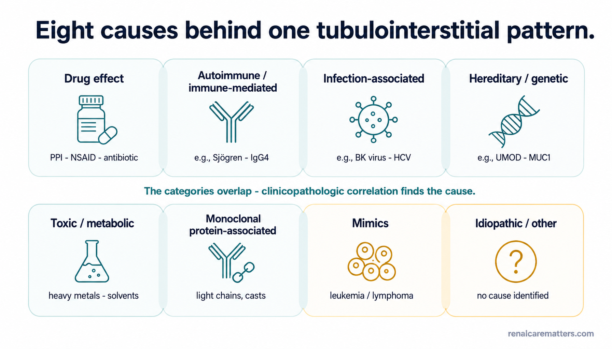
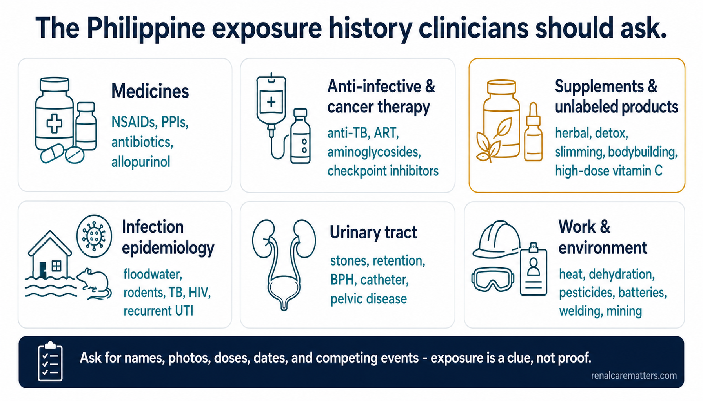
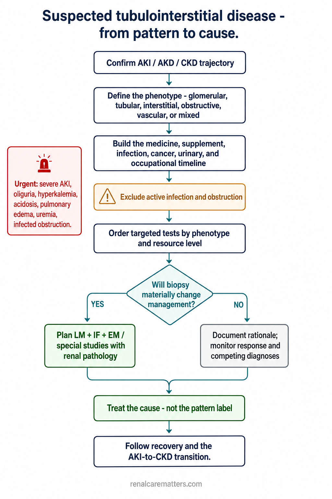
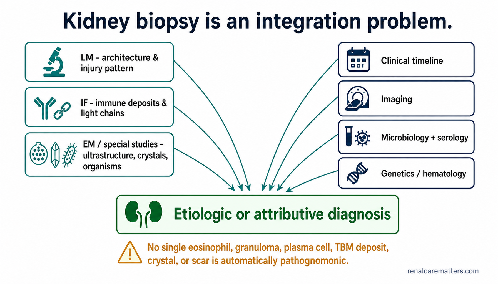
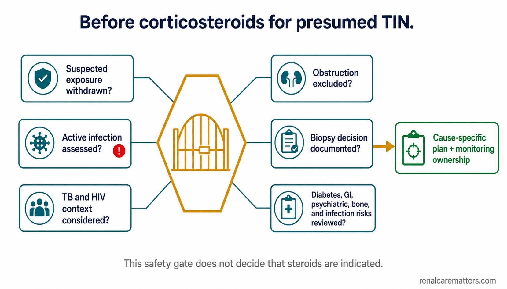
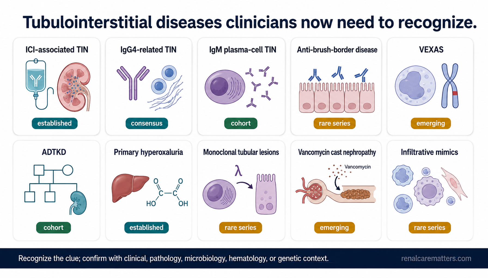
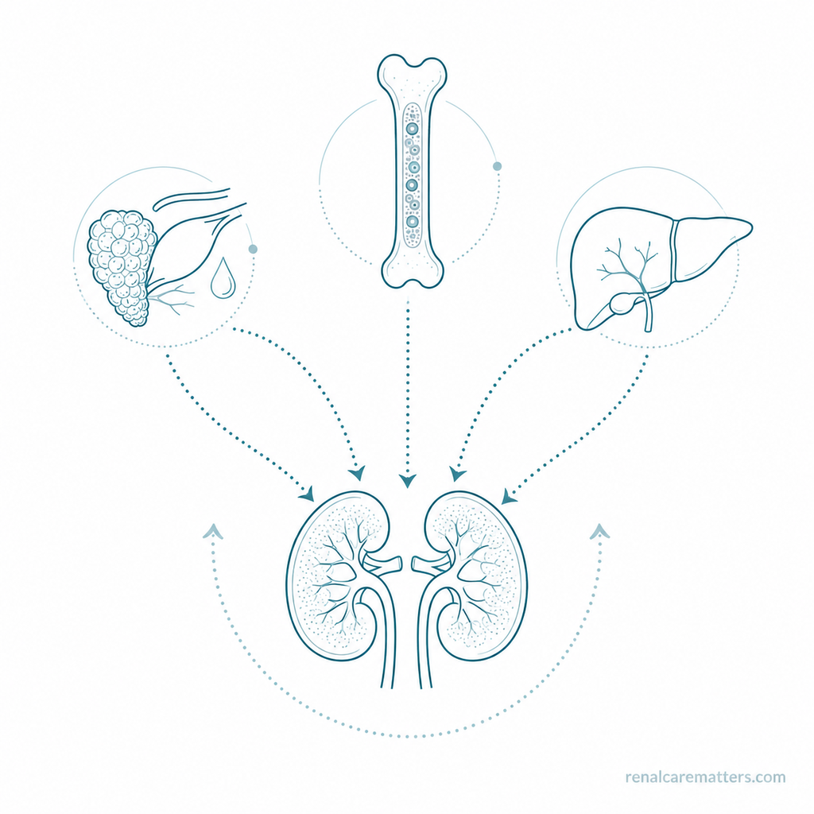

The 60-second orientation
The glomerulus begins urine formation by filtering plasma. The tubules then reclaim most filtered water and solute, control acid–base balance, regulate potassium and phosphate, concentrate or dilute urine, and return valuable molecules to the circulation. Injury to this recovery system may present as acute kidney injury (AKI), acute kidney disease (AKD), progressive chronic kidney disease (CKD), electrolyte wasting, glycosuria, sterile pyuria, modest proteinuria, or a surprisingly bland urine sediment. The biopsy pattern may be inflammatory, predominantly tubular, fibrotic, crystalline, infiltrative, infectious, immune, toxic, or inherited. The real diagnostic task is to identify the cause.
The one sequence this guide teaches
Recognize the compartment → define the phenotype → search all eight cause categories → biopsy when it changes management → treat the cause, not the label. Tubulointerstitial nephritis (TIN) is a description of tissue, not an etiology. Acute interstitial nephritis (AIN) is one pattern within it — and even AIN is not synonymous with drug allergy.
What this guide is — and is not
This is an educational clinician framework, not a clinical practice guideline and not a substitute for biopsy, renal pathology, microbiology, or specialist judgement. Cause distributions from Japan, North America, or Europe are not Philippine prevalence estimates; there are insufficient local biopsy-registry data to claim a national distribution of TIN causes.
The filter and the recovery system
A patient can lose kidney function because the filter is injured, because the recovery system is injured, or because both are injured together. Glomerular disease dominates our diagnostic reflexes — dysmorphic red cells, heavy albuminuria, a rising creatinine we attribute to "the nephritis." But the tubulointerstitial compartment does most of the metabolic work, and when it fails the presentation is quieter: the sediment can be bland and the albuminuria modest even as the kidney is losing its ability to reclaim, acidify, concentrate, and fine-tune.
Glomerulus
Filters plasma. Injury here shows dysmorphic red blood cells (RBCs), RBC casts, and albumin-predominant proteinuria.
Proximal tubule
Bulk reclamation of sodium, water, bicarbonate, glucose, amino acids, phosphate, urate, and low-molecular-weight (LMW) proteins. Injury → Fanconi-type wasting.
Loop of Henle
Builds the medullary concentration gradient. Injury → a concentrating defect and polyuria.
Distal nephron
Fine control of sodium, potassium, acid, and water. Injury → distal renal tubular acidosis (RTA) and potassium handling defects.
Interstitium
The structural and immune environment around tubules and capillaries — where inflammation, edema, and fibrosis play out.

The glomerulus filters plasma; the tubule then reclaims water and solute, acidifies, concentrates, and fine-tunes electrolytes — kidney function depends on both compartments, so injury to the recovery system can lower function even when the filter looks intact.
- Na
- Sodium
- HCO₃
- Bicarbonate
- RTA
- Renal tubular acidosis
Opening case — revisited at each step
A composite case (no single culprit — yet)
A 58-year-old develops a rising creatinine after treatment for pneumonia. Urine protein is modest, the sediment is not strongly nephritic, and there is no rash or eosinophilia. The medication list includes an antibiotic, a newly added proton-pump inhibitor (PPI), intermittent mefenamic acid (a nonsteroidal anti-inflammatory drug, NSAID), and an unlabeled supplement. Ultrasound has not yet excluded obstruction. What is the phenotype, which explanations compete, and what evidence would justify calling this drug-induced AIN?
Hold the urge to name a culprit. The antibiotic, the PPI, the NSAID, the supplement, the recent infection, and possible volume depletion are all live hypotheses — and more than one may be operating at once. We will return to this patient at each diagnostic step, because the discipline the case teaches is exactly the discipline the whole guide teaches: a pattern starts the differential; it does not finish it.
Three patterns, not one disease
The first move is to place the injury in a tissue pattern — while remembering that the pattern names the tissue reaction, not the cause. "Chronic" describes tissue damage (fibrosis and atrophy), not simply how long symptoms have been present.
| Pattern | Simplified tissue definition | Clinical caution |
|---|---|---|
| AIN (acute interstitial nephritis) | Interstitial inflammation and edema, tubular injury and tubulitis, little fibrosis or atrophy | Onset may not be dramatic; the cause is not always a drug |
| ATI (acute tubular injury) | Tubular epithelial injury with little accompanying inflammation | Often ischemic, toxic, septic, pigment-, cast-, or crystal-related |
| Chronic TIN | Interstitial fibrosis and tubular atrophy (IFTA) with variable inflammation | "Chronic" describes tissue damage, not symptom duration |
A fourth card: secondary inflammation or mimic
Interstitial inflammation beside severe glomerular disease, or infiltration by leukemia, lymphoma, myeloma, or extramedullary hematopoiesis, may resemble primary TIN. A tissue pattern does not by itself name the cause.

Simplified schematics of the three tubulointerstitial patterns — AIN, ATI, and chronic TIN — with the reminder that a pattern begins the differential but does not name the cause.
- AIN
- Acute interstitial nephritis
- ATI
- Acute tubular injury
- TIN
- Tubulointerstitial nephritis
- IFTA
- Interstitial fibrosis and tubular atrophy
Tubular phenotypes — the clue when the sediment is bland
Read these as patterns, not requirements. Any one of them can reframe an "unexplained" AKI as a tubulointerstitial process, and the specific pattern often points to a nephron segment.
- AKI, AKD, or progressive unexplained CKD
- Bland or minimally active sediment; sterile pyuria; white-cell casts when present (neither sensitive nor specific)
- Modest proteinuria — though heavier proteinuria may occur with NSAID-associated lesions or glomerular overlap
- Glycosuria disproportionate to the serum glucose (proximal tubule)
- Hypophosphatemia or phosphate wasting (proximal tubule)
- Hypokalemia; normal-anion-gap metabolic acidosis (proximal or distal RTA)
- Hypouricemia or urate wasting; polyuria or a concentrating defect (loop/collecting system)
- Low-molecular-weight (tubular) proteinuria when measurable
- Imaging evidence of obstruction, reflux scarring, infiltrative enlargement, masses, stones, or nephrocalcinosis
| Finding | Possible localization | Important confounders |
|---|---|---|
| Glycosuria with normal/modestly elevated blood glucose | Proximal tubular dysfunction | Sodium–glucose cotransporter-2 (SGLT2) inhibitors, pregnancy, collection error |
| Hypophosphatemia / phosphate wasting | Proximal tubule | Nutrition, refeeding, respiratory alkalosis, parathyroid hormone (PTH) / fibroblast growth factor 23 (FGF23) disorders |
| Normal-anion-gap metabolic acidosis | Proximal or distal RTA, gastrointestinal (GI) bicarbonate loss | CKD, saline, diarrhea; urine indices have limitations |
| Hypokalemia | Renal wasting, GI loss, or shift | Diuretics, magnesium deficiency, acid–base state |
| Polyuria / concentrating defect | Loop / collecting system or medullary injury | Hyperglycemia, diuretics, polydipsia, recovery from AKI |
| Non-albumin-predominant proteinuria | Tubular or overflow protein | Monoclonal light chains require urgent evaluation |
The fractional excretion of sodium (FENa) and of urea (FEUrea) are phenotype clues here, not diagnoses, and both mislead in non-steady-state AKI, in CKD, and on diuretics. For the paired-specimen technique, timing rules, and the situations where these indices mislead, work alongside Unlocking Urine Electrolytes.
What does not exclude AIN or TIN
The classical "allergic" picture is the exception, not the rule. Anchoring on it is how tubulointerstitial disease gets missed.
No rash
Absent in most biopsy-proven cases.
No fever
The febrile presentation is uncommon.
No peripheral eosinophilia
Its absence does not exclude AIN.
Negative urine eosinophils
Poor accuracy against biopsy; not a rule-out test.
Bland urine sediment
Fully compatible with important tubulointerstitial disease.
Partial improvement after fluids
Does not confirm a purely hemodynamic cause.
Evidence callout
Low–Moderate In a single-center biopsy series of 133 patients with biopsy-proven AIN, the classic fever–rash–eosinophilia triad occurred in only about 10% of drug-induced cases.4 Urine eosinophils performed poorly against kidney biopsy (at a 1% cutoff, sensitivity ≈ 31%, specificity ≈ 68%) and may appear in other kidney diseases — they should not be used to rule AIN in or out.3
Moderate Modern non-invasive markers outperform the eosinophil era. Urinary C-X-C motif chemokine ligand 9 (CXCL9) is the strongest single validated AIN biomarker to date,5 and a urine tumor necrosis factor-α (TNF-α) plus interleukin-9 (IL-9) signature raised diagnostic discrimination substantially over clinician gestalt (area under the curve, AUC ≈ 0.62 → 0.84).6 Availability is limited and none replaces biopsy, but they belong in the mental model that has moved past urine eosinophils.

The classic AIN triad is uncommon and urine eosinophils are unreliable, whereas modern urine biomarkers outperform them — none, however, replaces biopsy.
- AIN
- Acute interstitial nephritis
- CXCL9
- C-X-C motif chemokine ligand 9
- TNF-α
- Tumor necrosis factor-alpha
- IL-9
- Interleukin-9
- AUC
- Area under the receiver-operating-characteristic curve
The major diagnostic competitors
Before committing to a tubulointerstitial label, ask what else explains the picture — several competitors are more urgent, and mixed mechanisms are common.
| Competitor | Clues | Immediate discriminator |
|---|---|---|
| Hemodynamic AKI | Hypotension, fluid loss, diuretics, renin–angiotensin–aldosterone system (RAAS) blockade, heart failure | Timeline, perfusion, response trajectory; urine indices are confounded |
| Sepsis-associated ATI | Infection, shock, inflammation, nephrotoxins | Hemodynamics, cultures, organ dysfunction, sediment; mixed mechanisms common |
| Obstruction | Retention, benign prostatic hyperplasia (BPH), pelvic disease, stones, neurogenic bladder | Kidney/bladder ultrasound and post-void residual when relevant |
| Glomerular disease | Dysmorphic RBCs, RBC casts, substantial albuminuria, a systemic syndrome | Urine microscopy, protein phenotype, serology, biopsy |
| Pyelonephritis or infected obstruction | Fever, flank pain, pyuria, bacteriuria, obstruction | Culture and imaging; urgent drainage if infected obstruction |
| Infiltrative disease | Cancer, cytopenias, organ enlargement, systemic clues | Imaging, hematologic studies, biopsy |
Eight causes behind one pattern
The framework preserves the eight etiologic categories from Cornell's updated tubulointerstitial classification.1 Use them as interlocking cards, not rigid silos — the categories overlap, and clinicopathologic correlation, not any single feature, finds the cause.
| Category | Representative entities | Philippine bedside priority |
|---|---|---|
| Drug effect | Antibiotic / PPI / NSAID AIN, vancomycin ATI and casts, lithium, chemotherapy, crystal injury | Very high — actionable exposure history |
| Autoimmune / immune-mediated | Sjögren, tubulointerstitial nephritis and uveitis (TINU), sarcoidosis, immunoglobulin G4-related disease (IgG4-RD), anti-brush-border antibody disease, anti-neutrophil cytoplasmic antibody (ANCA)-associated | Moderate–high when systemic clues exist |
| Infection-associated | Pyelonephritis, adenovirus, BK polyomavirus, tuberculosis (TB)-associated, infection-triggered injury | High — infection must precede immunosuppression decisions |
| Hereditary / genetic | Autosomal dominant tubulointerstitial kidney disease (ADTKD), nephronophthisis, Dent disease, mitochondrial disease, VEXAS (vacuoles, E1 enzyme, X-linked, autoinflammatory, somatic) overlap | Selected phenotype; often missed |
| Toxic / metabolic | Oxalate, phosphate, urate, bile, heme, light chains, heavy metals, aristolochic acid | High when exposure or metabolic context fits |
| Monoclonal protein-associated | Cast nephropathy, light-chain proximal tubulopathy, monoclonal immunoglobulin deposition disease (MIDD) | High-stakes; urgent hematology–nephrology pathway |
| Mimics | Leukemia, lymphoma, myeloma, extramedullary hematopoiesis, severe glomerulonephritis-associated inflammation | Critical when biopsy and clinical story disagree |
| Idiopathic / other | ALECT2 amyloidosis, obstruction, reflux, unresolved TIN | A diagnosis only after disciplined evaluation |

The eight etiologic categories that can produce one tubulointerstitial pattern, drawn as overlapping cards to signal that they co-occur; clinicopathologic correlation, not any single feature, finds the cause.
- IgG4-RD
- Immunoglobulin G4-related disease
- ADTKD
- Autosomal dominant tubulointerstitial kidney disease
- MIDD
- Monoclonal immunoglobulin deposition disease
High-yield drug table
| Injury pattern | Examples | Important nuance |
|---|---|---|
| Immune-mediated AIN | Beta-lactams, sulfonamides / trimethoprim-sulfamethoxazole (TMP-SMX), fluoroquinolones, rifampicin, PPIs, NSAIDs, allopurinol, selected diuretics and anticonvulsants | Almost any drug may cause AIN; timeline and alternative causes matter |
| Direct tubular toxicity | Aminoglycosides, vancomycin, tenofovir disoproxil fumarate (TDF), cisplatin, ifosfamide, pemetrexed | May show ATI with little inflammation |
| Crystal / cast injury | Acyclovir, sulfonamides, methotrexate, excessive vitamin C / oxalate, urate, vancomycin casts | Crystals may rupture tubules and provoke granulomatous inflammation |
| Immune checkpoint injury | Nivolumab, pembrolizumab, atezolizumab, durvalumab, ipilimumab | Competing PPI / NSAID / antibiotic exposure is common; biopsy may alter cancer therapy |
| Multifactorial | Sepsis + volume depletion + antibiotics + NSAIDs; cancer + obstruction + chemotherapy | Do not force a one-cause attribution when injury is mixed |
Case check-in
Our 58-year-old sits squarely in "multifactorial": a recent infection, an antibiotic, a new PPI, an intermittent NSAID, an unlabeled supplement, and possible volume depletion. Temporal association with any single agent supports investigation — it does not prove drug causality.
The Philippine exposure history
Localization changes pretest probabilities, exposure history, and infection safeguards — not the underlying biology. Build the exposure timeline before you reach for "idiopathic."
Before calling this idiopathic TIN, ask:
Any ibuprofen, mefenamic acid, naproxen, celecoxib, ketorolac, PPI, antibiotic, allopurinol, diuretic, anticonvulsant, or anti-TB drug? · Any emergency-room, dental, borrowed, or intermittently reused medicine? · Any online, repacked, unlabeled, herbal, slimming, bodybuilding, detox, or high-dose vitamin C product? · Any floodwater, rodent, farm-animal, rice-field, sewer, sanitation, or agricultural exposure? · Any fever, flank pain, dysuria, recurrent urinary tract infection (UTI), prior antibiotics, sterile pyuria, or TB symptoms? · Any weak stream, urinary retention, stone, catheter, pelvic malignancy, or neurogenic bladder? · Any human immunodeficiency virus (HIV), antiretroviral therapy (ART) / pre-exposure prophylaxis, immunosuppression, transplant, chemotherapy, or checkpoint inhibitor? · Any heat-intensive work, recurrent dehydration, pesticide handling, or battery / paint / welding / mining exposure? · Any family history of bland-sediment CKD, early kidney failure, gout, stones, deafness, visual disease, or consanguinity?

A six-domain Philippine exposure history — medicines, anti-infective and cancer therapy, supplements and unlabeled products, infection epidemiology, urinary tract, and work and environment — asking for names, photos, doses, dates, and competing events.
- NSAID
- Nonsteroidal anti-inflammatory drug
- PPI
- Proton-pump inhibitor
- ART
- Antiretroviral therapy
- TB
- Tuberculosis
- UTI
- Urinary tract infection
- BPH
- Benign prostatic hyperplasia
Philippine infection modules
Genitourinary or systemic TB may cause sterile pyuria, hematuria, obstruction, granulomatous inflammation, or systemic disease. At the same time, rifampicin may cause immune-mediated AIN, and aminoglycosides used in selected resistant regimens cause tubular toxicity — so the treatment is on both sides of the differential.
Sterile pyuria is not TB-specific, and granulomas do not independently prove TB or sarcoidosis. Coordinate microbiology, pathology, infectious disease, and the Department of Health National Tuberculosis Control Program (NTP) directly-observed treatment (DOTS) pathway. Do not change a multidrug regimen unilaterally.
Floodwater, rodents, agriculture, sanitation work, and heavy rainfall raise relevance. AKI may reflect tubulointerstitial inflammation, ATI, hypoperfusion, myocarditis, rhabdomyolysis, hyperbilirubinemia and bile casts, endothelial injury, or sepsis. Characteristic tubular clues include a nonoliguric, hypokalemic AKI with glycosuria, bicarbonate and phosphate wasting, and concentrating defects.20
Do not relabel all leptospirosis-associated AKI as primary TIN, and do not let diagnostic-test limitations delay antimicrobial care or organ support when the clinical syndrome is compelling.
Distinguish TDF proximal tubular toxicity from ART-related crystal or drug injury; from HIV-associated nephropathy and immune-complex disease as glomerular alternatives; from TB, syphilis, bacterial, and opportunistic coinfections; from immune-reconstitution syndromes; and from hemodynamic and medication-interaction causes. Tubular clues for TDF toxicity are euglycemic glycosuria, phosphate wasting and hypophosphatemia, bicarbonate loss, low-molecular-weight proteinuria, and a rising creatinine — most of which resolve after the drug is stopped.19 The Philippines is experiencing a fast-growing HIV epidemic, which makes tenofovir-era nephrotoxicity increasingly relevant. Coordinate with the HIV treatment team; do not independently stop ART.
Hold simultaneous consideration of rejection, BK polyomavirus, adenovirus, pyelonephritis, calcineurin-inhibitor toxicity, obstruction or vascular disease, and volume depletion or drug interactions. Do not empirically intensify immunosuppression for presumed rejection until infection — particularly BK replication — is considered. Current consensus is to screen every kidney transplant recipient for plasma BK viremia monthly through month 9, then quarterly to two years.18
Supplements, unregulated products, and occupational exposure
Do not use "herbal nephropathy" as a causal shortcut. Capture the product photo and ingredient panel, the Food and Drug Administration (FDA) registration status, the source (pharmacy, online, traditional healer, imported, repacked), the dose, duration, and preparation, the concurrent medicines, the possibility of undeclared NSAIDs or steroids, heavy metals, aristolochic acid, oxalate precursors, or diuretics, and whether other household members use the same batch. Registration describes regulatory status — it neither proves causality nor guarantees a product could not contribute to injury. The Philippine FDA runs a single unified verification portal for product authenticity.
Agricultural, heat, and chemical exposure — a domain, not a declared epidemic
Heat, heavy workload, recurrent dehydration, agrochemicals, NSAIDs, and metals are biologically plausible and potentially interacting exposures. Philippine renal epidemiology is insufficient to label chronic interstitial nephritis in agricultural communities as endemic locally. Ask about the exact task and heat duration, shade/rest/water access, recurrent heat illness, NSAID use during work, pesticide handling and personal protective equipment, and battery, welding, paint, mining, or contaminated-water exposure.
From pattern to cause — the workup

The diagnostic sequence from confirming the kidney trajectory through phenotype, exposures, exclusion of infection and obstruction, targeted tests, and a biopsy decision, converging on treating the cause rather than the pattern label.
- AKI
- Acute kidney injury
- AKD
- Acute kidney disease
- LM
- Light microscopy
- IF
- Immunofluorescence
- EM
- Electron microscopy
Resource-tiered Philippine workup
The expanded tier is not a universal order set — every item must be selectable through a phenotype indication.
| Tier | Setting | Representative actions |
|---|---|---|
| Core | Primary care, district or most general hospitals | Prior creatinine; serial creatinine and estimated glomerular filtration rate (eGFR); complete blood count with differential; sodium, potassium, chloride, bicarbonate, glucose; urinalysis with microscopy; albumin-to-creatinine ratio (ACR) and/or protein-to-creatinine ratio (PCR); culture if infection plausible; medication/exposure timeline; kidney/bladder ultrasound ± post-void residual |
| Expanded | Secondary hospital | Magnesium, phosphate, calcium, uric acid, liver tests, creatine kinase when relevant; blood cultures if septic; phenotype-directed TB / leptospirosis / HIV studies; selected antinuclear antibody, C3/C4, SSA/SSB, ANCA, IgG subclasses; serum protein electrophoresis, immunofixation, serum free light chains; cross-sectional imaging as indicated |
| Biopsy center | Tertiary / subspecialty | Kidney biopsy with LM, IF, EM when available; targeted stains and immunohistochemistry; crystal and cast assessment; organism-directed testing; hematopathology support; BK / adenovirus testing in transplant; multidisciplinary review |
| Selected advanced | Strong inherited, metabolic, or rare-disease phenotype | Genetic testing, specialized metabolic/crystal studies, selected tubular biomarkers, molecular pathology |
Biopsy — an integration problem, not a reflex
Consider biopsy when one or more apply: unexplained or progressive AKI; non-recovery after hemodynamics, obstruction, and removable exposures are addressed; competing drug, infection, immune, glomerular, monoclonal, malignant, or infiltrative diagnoses; significant hematuria or proteinuria suggesting glomerular overlap; suspected IgG4-RD, monoclonal disease, malignancy, unusual crystal disease, or an inherited disorder; immunosuppression being contemplated while diagnostic confidence is limited; chronic TIN with a potentially treatable or familial cause; or clinical findings that are discordant with the presumed diagnosis. Biopsy is not automatic — weigh bleeding risk, kidney size, urgency, patient preference, likely impact on treatment, and access to proper tissue processing.
Philippine biopsy logistics — confirm the whole pathway first
Confirm where tissue will be processed and who will interpret it, and that LM, IF, EM, and required special stains are available. Do not place the entire sample in formalin if IF or EM is required. If infection is plausible, prearrange fresh tissue for bacterial, fungal, or mycobacterial studies. Brief pathology on the suspected etiologies, the full medication timeline, serologies, cultures, imaging, cancer/transplant status, and family history, and confirm availability of simian virus 40 (SV40)/BK, IgG subclasses, light-chain stains, crystal evaluation, and hematopathology support when relevant. Biopsy access, specimen transport, renal-pathology expertise, turnaround, and patient cost all vary — confirm the entire pathway before performing the biopsy locally.

Kidney biopsy is an integration problem: microscopy modalities plus the clinical timeline, imaging, microbiology, serology, genetics, and hematology converge on an etiologic or attributive diagnosis, because no single feature — eosinophil, granuloma, or tubular basement membrane (TBM) deposit — is pathognomonic.
- LM
- Light microscopy
- IF
- Immunofluorescence
- EM
- Electron microscopy
- TBM
- Tubular basement membrane
- SV40
- Simian virus 40 (large-T antigen stain, a BK surrogate)
Pattern, etiologic, and attributive diagnosis
Distinguish a pattern diagnosis (AIN, ATI, chronic TIN, granulomatous TIN, crystal nephropathy) from an etiologic diagnosis (a true cause such as a gene variant, organism, toxin, or drug) and an attributive diagnosis (association with a systemic disease such as IgG4-RD or sarcoidosis when the ultimate cause is not fully known). No single feature closes the loop.
| Histologic clue | Possible directions | Why it is not final |
|---|---|---|
| Eosinophils | Drug reaction, IgG4-RD, other inflammatory processes | Not specific for allergic AIN |
| Granulomas | Drug, sarcoid, TB / fungal infection, ANCA, malignancy-associated | Geography and microbiology matter |
| Plasma-cell-rich infiltrate | IgG4-RD, IgM plasma-cell TIN, infection, immune disease | Requires immunophenotype and systemic context |
| Tubular basement membrane (TBM) immune deposits | Autoimmune / immune-mediated disease, IgG4-RD, infection-associated reaction | Seen in only a subset; not exclusive |
| Marked ATI with little inflammation | Ischemic, toxic, septic, pigment, cast, crystal | Exposure and systemic context determine cause |
| IFTA with little inflammation | Chronic toxic/metabolic, genetic, resolved injury | Often nonspecific |
Treatment — and the steroid question
Universal principles come first: remove the probable offending exposure when safe; treat infection; relieve obstruction; correct volume, electrolyte, and acid–base complications; avoid re-exposure and document serious suspected drug reactions; provide kidney replacement therapy for standard clinical indications, not a creatinine threshold; apply disease-specific treatment for immune, IgG4-related, monoclonal, genetic/metabolic, malignant, infectious, or transplant disease; and plan follow-up for incomplete recovery and CKD transition.
Steroids may help selected immune-mediated AIN; the evidence does not support an automatic one-size-fits-all prescription
Low certainty A 2025 systematic review of AIN treatment pooled 23 heterogeneous studies (mostly retrospective; 1,205 patients); a meta-analysis of only three studies suggested a renal benefit from corticosteroids, but adverse effects were inconsistently reported and certainty was low. Earlier treatment after withdrawing the culprit has been associated with better recovery in some cohorts,7 but that is vulnerable to selection and timing bias. Fibrosis and atrophy reduce reversibility. Active infection, infected obstruction, TB risk, diabetes, GI bleeding, psychiatric and bone risk, and diagnostic uncertainty all shift the balance — and some diseases need different or additional immunotherapy. The guide must never output "steroids indicated" from a checklist.

A visible safety gate to resolve before empirical corticosteroids for presumed TIN — the gate surfaces unresolved issues and explicitly does not decide that steroids are indicated.
- TB
- Tuberculosis
- HIV
- Human immunodeficiency virus
- GI
- Gastrointestinal
Do not embed a fixed universal dose. Any representative regimen belongs in a nephrologist-directed setting, citing the exact source, distinguishing immune checkpoint inhibitor (ICI)-associated AIN from conventional drug-associated AIN, and labeled specialist-directed rather than calculator-generated.
Emerging entities clinicians now need to recognize
This atlas spans entities from immune checkpoint inhibitor disease to primary hyperoxaluria type 1 (PH1) — each recognized by a clue and confirmed only in clinical, pathology, microbiology, hematology, or genetic context.

An atlas of ten tubulointerstitial entities clinicians now need to recognize, each with a simplified clue and an evidence badge from established through emerging.
- ICI
- Immune checkpoint inhibitor
- VEXAS
- Vacuoles, E1 enzyme, X-linked, autoinflammatory, somatic syndrome
- PH1
- Primary hyperoxaluria type 1
Immune checkpoint inhibitor-associated TIN
Moderate AKI attributable to ICI therapy is definition-dependent, roughly 1.4–5.7% across series;9 among biopsied ICI-AKI, AIN is the dominant lesion — about 83% of the 151 biopsied in a 429-patient multicenter cohort, with recurrent AKI after rechallenge near 16.5%.10 Steroid treatment is associated with recovery, and a 2025 meta-analysis estimated recurrence near 18% — though steroids at rechallenge did not reduce it. Check concurrent PPIs, NSAIDs, antibiotics, contrast, chemotherapy, sepsis, obstruction, and glomerular disease; involve oncology and nephrology early; biopsy when the result can change ICI or immunosuppression decisions. Base practice on the 2025 American Society of Onco-nephrology position statement.9 These are cohort and meta-analytic estimates, not randomized treatment or rechallenge data.
IgG4-related TIN
High (disease-wide) A systemic fibroinflammatory disease whose kidney lesions may be mass-forming and mimic malignancy; features can include plasma-cell-rich TIN, storiform fibrosis, increased IgG4-positive plasma cells, TBM immune deposits, other-organ involvement, and hypocomplementemia — none interpreted in isolation. In the phase 3 MITIGATE trial (135 adults with active IgG4-RD), inebilizumab reduced treated flares (7/68 versus 40/67; hazard ratio 0.13).11 State clearly that this is disease-wide efficacy, not a kidney-specific randomized endpoint. Inebilizumab was FDA-approved for IgG4-RD in April 2025; verify Philippine availability and regulatory status before making access claims.
IgM plasma-cell TIN
Very low / emerging A newly characterized, rare, plasma-cell-rich disease; a subset associates with Sjögren syndrome or primary biliary cholangitis, and the defining evidence is a small Japanese biopsy series.12 Do not imply a validated global prevalence or a standard therapy.
Anti-brush-border antibody disease
Low A kidney-limited autoimmune disease targeting brush-border antigens — low-density lipoprotein receptor-related protein 2 (LRP2/megalin), and, identified later, cubilin and amnionless. It may show ATI, fibrosis, TBM deposits, and variable plasma cells, and requires specialized pathology and serologic methods with expert consultation.13
VEXAS-associated TIN
Moderate An adult-onset autoinflammatory syndrome from somatic UBA1 mutation.14 Kidney biopsy may show a severe neutrophil-rich TIN that mimics pyelonephritis. Look for an older male phenotype, systemic inflammation, macrocytic anemia or cytopenias, chondritis, skin disease, or marrow clues, and integrate hematology, rheumatology, and genetics.
ADTKD and genetic TIN
Moderate Consider ADTKD with progressive bland-sediment CKD, little albuminuria, family history, early gout or hyperuricemia, or syndromic clues. Genes include UMOD, MUC1, REN, HNF1B, SEC61A1, and DNAJB11.15 Biopsy is often nonspecific and genetic testing is central — and some MUC1 variants are missed by standard next-generation sequencing panels, so a MUC1-specific assay must be ordered separately. In the Philippines, the University of the Philippines Manila National Institutes of Health Institute of Human Genetics is the referral home for genetic TIN.
Primary hyperoxaluria and treatable metabolic genetics
High (PH1) Connect hepatic oxalate overproduction to crystal deposition and tubulointerstitial injury. RNA-interference therapy is mechanism-directed: lumasiran targets glycolate oxidase (HAO1) and is approved for primary hyperoxaluria type 1 (PH1),17 while nedosiran targets lactate dehydrogenase A and is approved for PH1 only — with no consistent effect in primary hyperoxaluria type 2 (PH2). Frame PH2 (GRHPR) and PH3 (HOGA1) as unmet needs. Keep high-dose vitamin C, malabsorption, pancreatic disease, and bariatric surgery in the secondary-oxalate differential.
Monoclonal protein-associated lesions
Moderate Light-chain cast nephropathy, crystalline and noncrystalline light-chain proximal tubulopathy, MIDD, and crystal-storing histiocytosis. A low albumin fraction despite substantial total urine protein, unexplained AKI, anemia, hypercalcemia, bone symptoms, or abnormal free light chains should accelerate a nephrology–hematology evaluation.
The IKMG safeguard
A monoclonal gammopathy and kidney disease may coexist without a causal relationship. Establishing monoclonal gammopathy of renal significance (MGRS) generally requires an integrated kidney-biopsy and hematologic evaluation — a serum clone alone does not name the kidney lesion.16
Mimics
Leukemia, lymphoma, myeloma, extramedullary hematopoiesis, and interstitial inflammation secondary to severe glomerular disease. If the tissue and the presumed clinical diagnosis disagree, revisit whether the infiltrate is reactive, malignant, hematopoietic, infectious, or secondary to another compartment.

Many emerging tubulointerstitial diseases begin outside the kidney — an IgG4-driven gland, the VEXAS bone marrow, or the oxalate-overproducing liver — and converge on the tubulointerstitium, which is why the systemic history and multidisciplinary integration matter.
Objective tools that pair with this workup
This guide deliberately does not offer a numeric AIN probability score or a TIN diagnostic calculator — the reasoning is pattern-based, and a false-precision score would work against it. Instead, pair it with the objective calculators the library already provides — Kidney Disease: Improving Global Outcomes (KDIGO) staging, the fractional excretions, and more.
Referral, safety routing, and FAQ
Refer urgently for hospital / nephrology assessment
KDIGO stage 2–3 AKI or rapid progression · oliguria/anuria · hyperkalemia, severe acidosis, pulmonary edema, or a uremic complication · sepsis or suspected infected obstruction · severe electrolyte wasting or Fanconi syndrome · transplant graft dysfunction · a pulmonary-renal or systemic vasculitic syndrome · monoclonal disease, tumor lysis, or severe cancer-treatment toxicity.
| Finding | Route |
|---|---|
| Persistent unexplained AKI or a biopsy question | Nephrology |
| Hydronephrosis, retention, infected stone, or mass | Urology + nephrology / infectious disease (ID) as appropriate |
| TB-compatible syndrome or granulomatous biopsy | ID / pulmonology + NTP DOTS pathway |
| Leptospirosis with organ dysfunction | Hospital internal medicine / ID / nephrology |
| HIV / ART concern | HIV treatment team; no unilateral ART interruption |
| ICI / chemotherapy-associated AKI | Oncology + nephrology |
| Transplant dysfunction | The original transplant center when feasible |
| Familial / syndromic TIN | Nephrology + clinical genetics / genetic counseling |
Frequently asked
The takeaways
TIN is often quieter than glomerulonephritis. Tubular dysfunction can be the clue even when the urine is bland. The classical allergic picture is uncommon. A pattern starts the differential; it does not finish it. Exclude infection and obstruction, keep the full etiologic framework open, and use biopsy when it will change what you do.